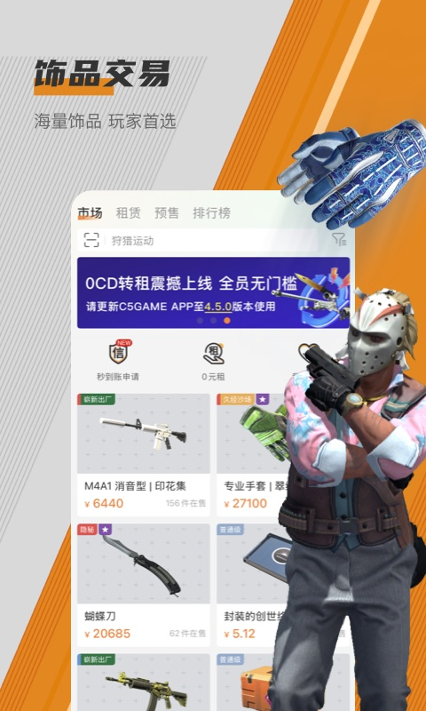
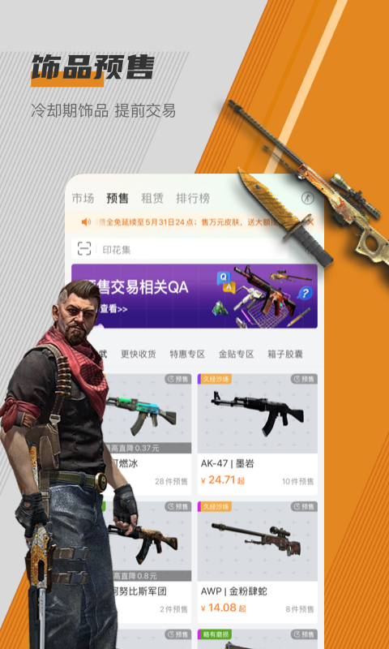

用了三年 C5GAME 才发现的 5 个隐藏功能——求购、筛选、礼物链接全挖透
大多数人只拿 C5GAME 当一个买皮肤的平台，其实它藏着不少官方没明说的进阶玩法。从求购分层发布到礼物链接自动激活，翻了个底朝天整理出这 5 个冷门但真好用的功能。
你以为 C5GAME官网 就是个搜皮肤、下单、等 Steam 报价的地方？其实它藏着不少"官方不宣传、老玩家才知道"的暗门。我自己从第一次官方下载到现在快三年了，从只敢搜 "AWP" 到能精准蹲到贴纸不超过 5 块钱的捡漏货，踩过的坑和摸到的门道攒了一箩筐。今天把其中最有用的 5 个挖出来，每个都讲清楚在哪、怎么开、什么场景真能省时间省大钱。
隐藏功能一：求购分层发布——同时挂两个价，哪个先成交算哪个
大部分人发求购就是一个价挂上去等，要么等半天没人理，要么市场价飘了自己没跟上。C5GAME 其实没有限制你同时发几个求购——同一个饰品、同一个磨损等级，你可以挂两个求购单：一个比市场价高一点点（比如高 5%），保证第一时间被卖家看到；另一个挂得很低（比如低 20%），就是碰碰运气捡漏。
具体操作：在发布求购时正常填条件，挂完一个之后，点"我的求购"页面里的"继续发布"，再填一版不同价格的。两个单子互不干扰，哪个先成交另一个会自动失效。卖家同时看到两个求购时，大概率会选高价的，但也不排除有人急着出货直接接低价的——我就靠这招以低于市场价 15% 的价格买到过一把久经沙场的蝴蝶刀，卖家当时明显是清库存。
适合谁：有耐心蹲货、又不想错过即时成交机会的人。纯想捡漏的只挂低价那一条就行。
隐藏功能二：求购备注——给卖家看的"精准筛选器"，官方教程根本没提
发求购的时候有没有注意到那个不起眼的备注框？大多数人空着就提交了，其实这个备注是 C5GAME 求购功能里最被低估的细节。你可以在里面写得非常具体——"贴纸只要 Katowice 2014 的"、"磨损不要 BS"、"只要自动发货"——卖家看到备注后，会先判断自己手里的货能不能满足你的条件，再决定要不要响应你的求购。

这能帮你过滤掉大量无效响应。我以前求购一把 M4A1 消音型的"女武神"，没写备注的时候有七八个卖家响应，但其中五个的贴纸是 Katowice 2015 的，我根本不想要。后来备注里加了"贴纸限 2014"，响应数量降到三个，但每一个都精准命中。
注意：备注不能太长，大概 30 个字以内比较合适。也别写得太苛刻——"贴纸必须是 2014 卡托 4 连"这种等于把卖家范围锁死，没人响应别怪我没提醒。
隐藏功能三：自动发货筛选——勾选一个开关，付款后三分钟拿报价
C5GAME 上有两种发货方式：机器人自动发货和卖家手动发货。手动发货的价格通常便宜个几块钱，但你得等卖家上线（有人等了三天）。很多人不知道搜索结果页有一个"自动发货"的勾选框，勾上之后只显示支持机器人发货的饰品，付款后几分钟内 Steam 报价就到了。
这个筛选器藏在搜索结果页的条件栏里，和价格区间、磨损程度并列，颜色偏灰，很容易被忽略。我现在买任何饰品第一步就是勾自动发货——省下的等待时间比那几块钱差价值钱多了。唯一要注意的是：自动发货的饰品卖家已经把库存交给 C5GAME 托管了，所以不会出现"卖完了没下架"的情况，看到就是有。
隐藏功能四：礼物链接自动激活——点一下按钮，游戏直接进你的库
如果你买的是 Steam 礼物链接（Gift Link）而不是 CDKEY，C5GAME 有一个自动激活按钮，藏在订单详情页里。正常流程是你拿到礼物链接 → 打开浏览器 → 确认登录了正确的 Steam → 点击链接 → Steam 确认页面 → 接收。但如果你在 C5GAME 已经绑定了 Steam 账号，订单页上会出现一个"激活"按钮，点一下 C5GAME 就会尝试自动把礼物加到你绑定的 Steam 里，全程不用切浏览器。
听起来很美对吧？但有一个巨大的坑——你绑定的 Steam 必须是你想接收礼物的那个账号，而且礼物链接的区域版本必须和你 Steam 的区域匹配（大陆版礼物链接只能激活到大陆 Steam）。我朋友就踩过坑：他绑定的是小号 Steam，点了自动激活之后礼物直接进了小号，Steam 一旦确认就撤销不了，亏了 200 多。所以保险起见，我还是推荐手动开无痕窗口激活——多花 30 秒换一个零失误。
隐藏功能五：磨损程度的性价比陷阱——FT 不是永远的平衡点
所有我翻过的c5game文档和社区教程都会告诉你 FT（久经沙场）是性价比之王——外观过得去、价格比 FN 低很多。但我在 C5GAME 蹲了几百个饰品的价格走势之后发现：不同饰品的"性价比磨损段"完全不一样。有些饰品 MW（略有磨损）的外观和 FT 几乎没区别，但价格只比 FT 高 10%；有些饰品 BS（战痕累累）反而比 FT 便宜 50%，但外观其实没那么糟糕——尤其是喷漆面积大的皮肤，磨损只在边角，远看根本看不出来。
怎么找到每个饰品的"甜点磨损段"？在 C5GAME 的搜索结果页，按磨损程度分组看均价。比如你搜 "AWP 龙狙"，分别点开 FN、MW、FT、WW、BS 的价格分布，你会发现有时候 MW 比 FT 贵的那点钱完全能接受，或者 BS 的价格跌到了一个不正常的低点——这时候下手比盲目追 FT 划算得多。我买过一把 BS 磨损的 AK-47 二西莫夫，价格是 FT 的一半，喷漆主要集中在枪身中部，磨损全在握把和枪口位置，游戏里看几乎察觉不到。

一个提醒：求购的 12 小时时限藏在哪
最后说一个不算功能但必须提的隐藏规则——卖家响应你的求购之后，你只有 12 小时确认时间。超过 12 小时没点"确认供货"，求购自动取消、保证金解冻。这个时限 C5GAME 只会在求购详情页的小字里提一下，不会主动给你倒计时提醒。我以前因为出差忘了看，两个 2000 块的求购单直接被取消，亏了当时的市场价波动差。现在我手机上专门设了一个日历提醒，发布或收到响应之后 10 小时弹通知。
把 C5GAME 用透其实不难——别只停留在搜皮肤下单那一套，多点点那些看起来"不太重要"的按钮、多试试叠加筛选条件、多留意小字里藏的时限规则。平台的设计逻辑从来不是把所有功能摆在最显眼的位置，挖得越深，捡漏的机会就越多。如果你有什么我没提到的冷门技巧，也欢迎在评论区交流——毕竟一个人翻底朝天，总不如一群人一起挖来得彻底。顺便说句正事，这篇文章里提到的所有功能细节和对照参考，GitHub、Gitee、GitCode 三个仓库里都有完整资料，随时可以翻。